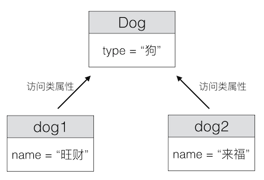

实例属性、类属性
实例属性:
通过类创建的对象 又称为 实例对象，对象属性 又称为 实例属性，记录对象各自的数据，不同对象的同名实例属性，记录的数据可能各不相同
类属性:
- 类属性就是 类对象 所拥有的属性，它被 该类的所有实例对象 所共有。
- 类属性可以使用 类对象 或 实例对象 访问
class Dog:
type = "狗" # 类属性
dog1 = Dog()
dog1.name = "旺财"
dog2 = Dog()
dog2.name = "来福"
# 类属性 取值
print(Dog.type) # 结果：狗
print(dog1.type) # 结果：狗
print(dog2.type) # 结果：狗

提示：在python中 “万物皆对象”，类本身也是一个对象，执行class语句时会被创建，称为 类对象。
使用场景：
- 类的实例 记录的某项数据 始终保持一致时，则定义类属性。
- 实例属性 要求 每个对象 为其 单独开辟一份内存空间 来记录数据，而 类属性 为全类所共有 ，仅占用一份内存，更加节省内存空间。
注意点：
1> 尽量避免类属性和对象属性同名。如果有同名对象属性，实例对象会优先访问对象属性
class Dog(object):
type = "狗" # 类属性
def __init__(self):
self.type = "dog" # 对象属性
# 创建对象
dog1 = Dog()
print(Dog.type) # 结果为 "狗" 使用 类对象 访问类属性
print(dog1.type) # 结果为 “dog” 类属性和对象属性同名，使用 实例对象 访问的是 对象属性
2> 类属性只能通过类对象修改，不能通过实例对象修改
class Dog(object):
type = "狗" # 类属性
# 创建对象
dog1 = Dog()
Dog.type = "Dog" # 使用 类对象 修改类属性
dog1.type = "dog" # 使用 实例对象 创建了对象属性type
print(dog1.type) # 结果为 “dog” 类属性和对象属性同名，访问的是对象属性
print(Dog.type) # 结果为 "Dog" 访问类属性
3> 类属性也可以设置为 私有，前边添加两个下划线。 如:
class Dog(object):
count = 0 # 公有的类属性
__type = "狗" # 私有的类属性
print(Dog.count) # 正确
print(Dog.__type) # 错误